Session: 20260302_131912_capture
Duration: 17.583 s | Total frames: 757 | FPS: 43.05
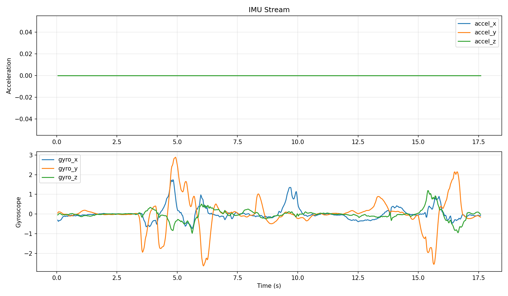
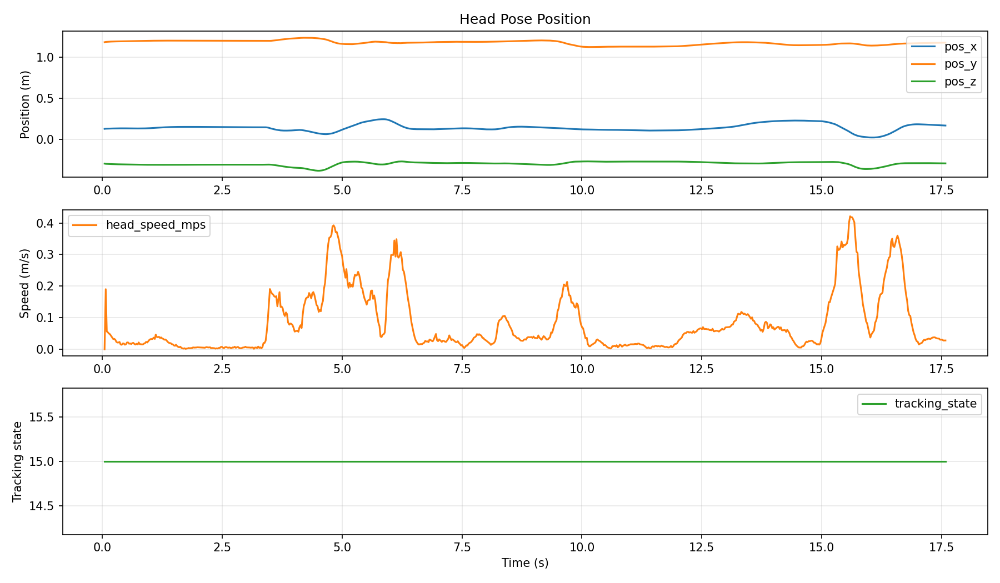
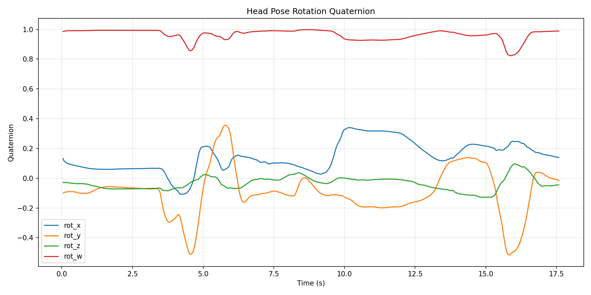
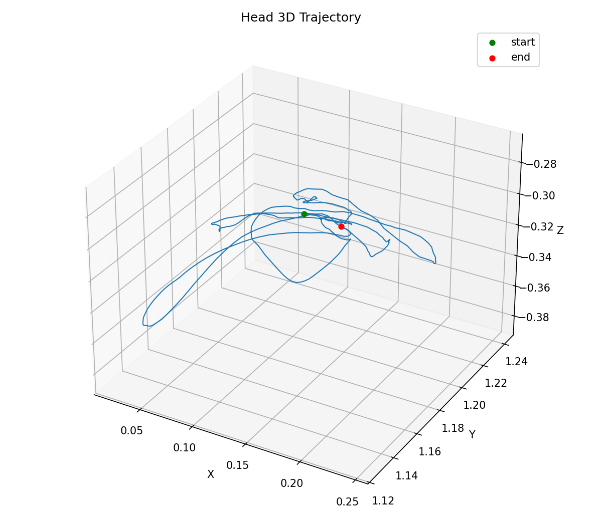
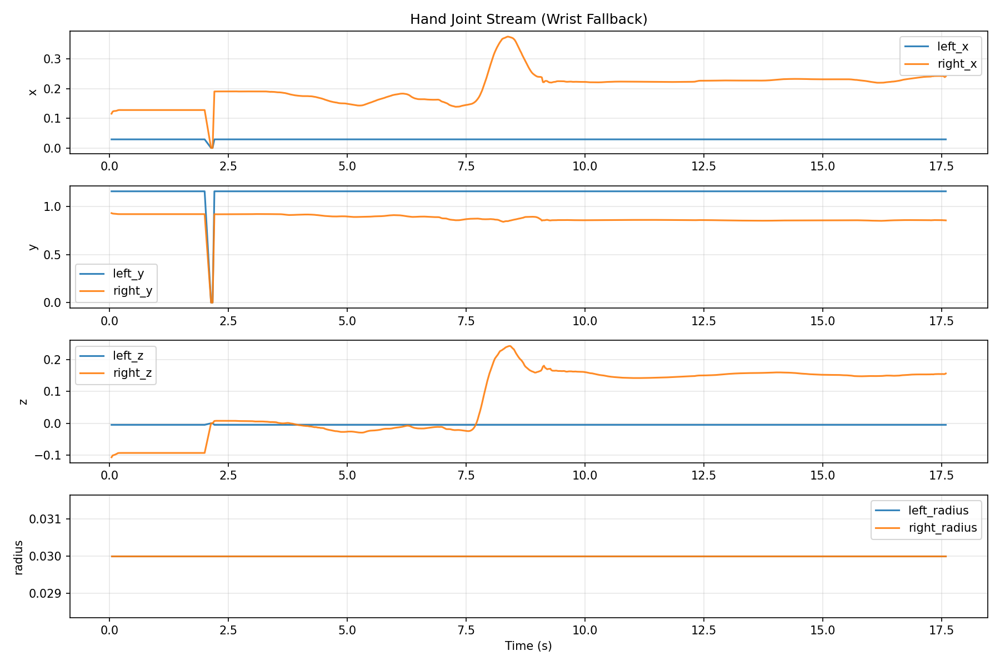
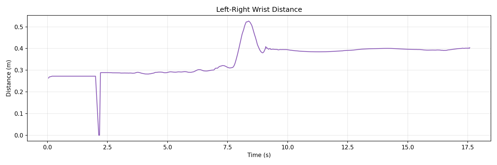
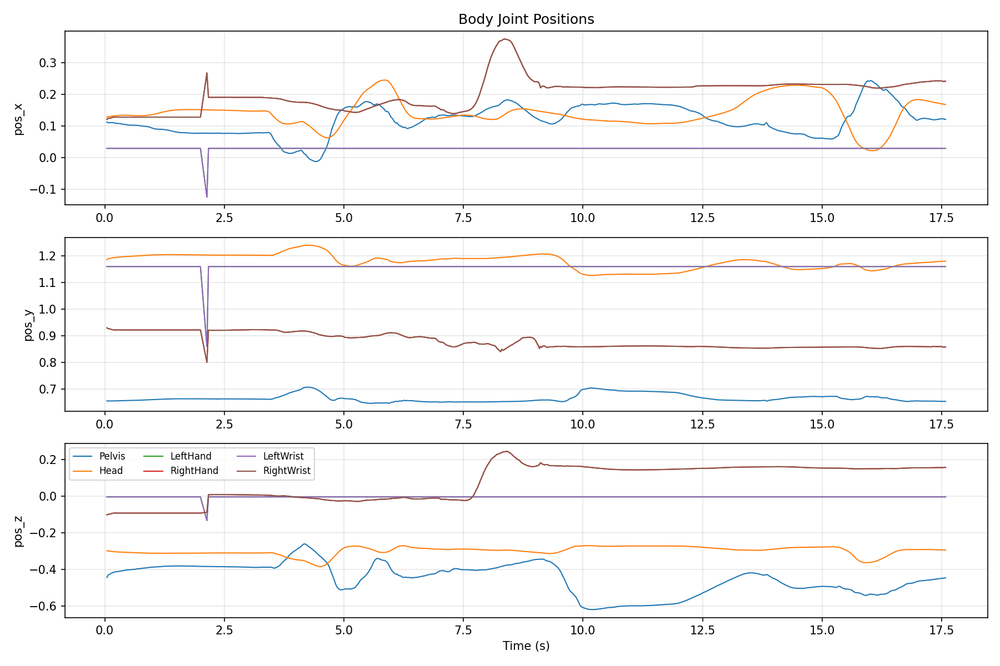
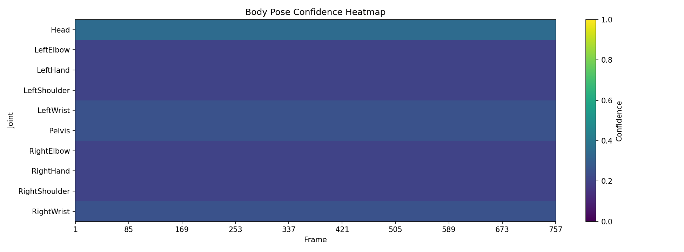
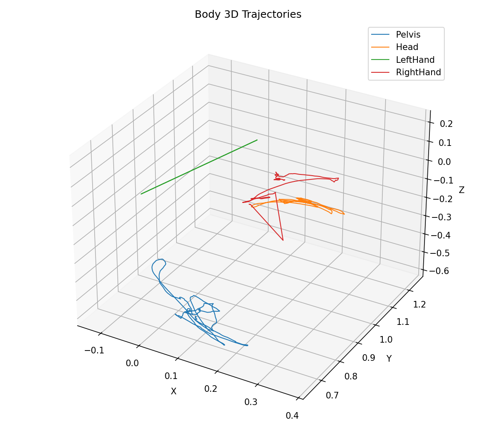
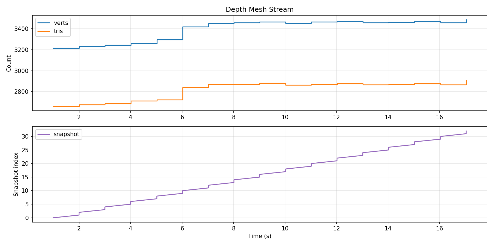
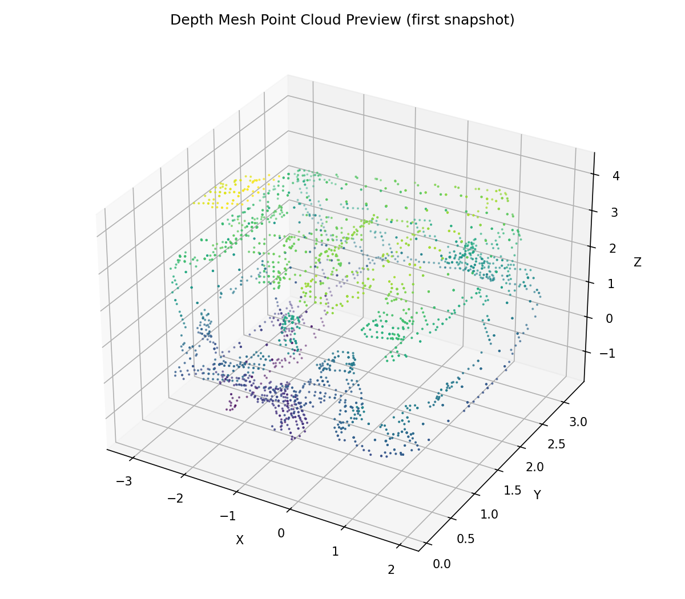
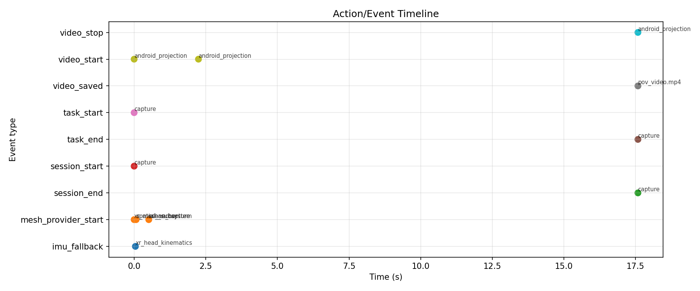
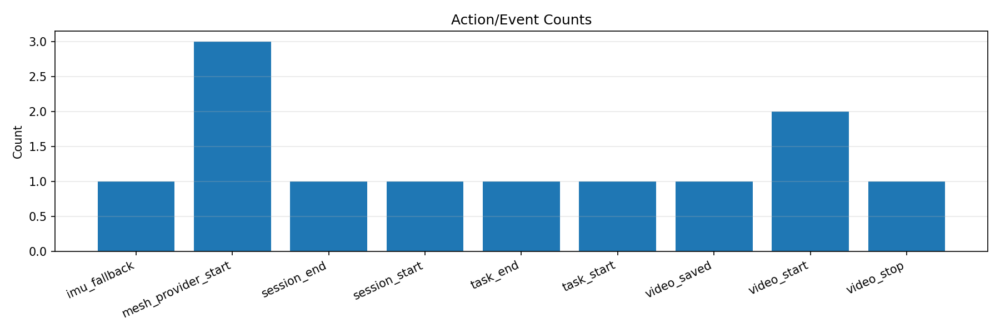
{
"session_id": "20260302_131912_capture",
"task_type": "capture",
"scenario_category": "general",
"total_frames": 757,
"duration_s": 17.583,
"actual_fps": 43.05,
"target_fps": 60,
"start_unix_s": 1772457552.651,
"end_unix_s": 1772457570.252
}
{
"session_id": "20260302_131912_capture",
"task_type": "capture",
"scenario_category": "general",
"capture_start_utc": "2026-03-02T13:19:12.6535570Z",
"capture_start_unix_s": 1772457552.651,
"sample_rate_hz": 60,
"device": {
"model": "Pico A92Y0",
"os": "Android OS 14 / API-34 (UKQ1.240321.001/20)"
},
"coordinate_system": {
"convention": "Unity left-handed Y-up",
"units": "meters",
"rotation_format": "quaternion (x,y,z,w)",
"origin": "XR tracking origin (floor)",
"axes": {
"x": "right",
"y": "up",
"z": "forward"
}
},
"camera_intrinsics": {
"note": "PICO 4 Ultra: 2x32MP stereo RGB. Spatial video output 2048x1536@60fps.",
"sensor_resolution": [
3264,
2448
],
"output_resolution": [
2048,
1536
],
"stereo_baseline_mm": 64,
"hfov_deg_approx": 100,
"approx_fx": 860,
"approx_fy": 860,
"approx_cx": 1024,
"approx_cy": 768,
"calibration_note": "Run checkerboard calibration for precise fx/fy/cx/cy per device."
},
"extrinsics": {
"note": "Cameras rigidly mounted on HMD. Extrinsics = fixed offset from HMD tracking center.",
"reference": "HMD tracking origin"
},
"depth_sensor": {
"type": "iToF",
"fov_deg": 60,
"range_m": 3.0,
"access": "spatial_mesh"
},
"hand_tracking": {
"joints_per_hand": 26,
"model": "OpenXR XR_EXT_hand_tracking",
"per_joint": [
"position_xyz_m",
"orientation_quat",
"radius_m"
],
"joint_names": [
"Palm",
"Wrist",
"ThumbMeta",
"ThumbProx",
"ThumbDist",
"ThumbTip",
"IndexMeta",
"IndexProx",
"IndexInter",
"IndexDist",
"IndexTip",
"MiddleMeta",
"MiddleProx",
"MiddleInter",
"MiddleDist",
"MiddleTip",
"RingMeta",
"RingProx",
"RingInter",
"RingDist",
"RingTip",
"LittleMeta",
"LittleProx",
"LittleInter",
"LittleDist",
"LittleTip"
]
},
"body_tracking": {
"joints": 24,
"model": "PICO BodyTrackerResult",
"per_joint": [
"position_xyz_m",
"orientation_quat",
"confidence"
],
"joint_names": [
"Pelvis",
"LeftHip",
"RightHip",
"Spine1",
"LeftKnee",
"RightKnee",
"Spine2",
"LeftAnkle",
"RightAnkle",
"Spine3",
"LeftFoot",
"RightFoot",
"Neck",
"LeftCollar",
"RightCollar",
"Head",
"LeftShoulder",
"RightShoulder",
"LeftElbow",
"RightElbow",
"LeftWrist",
"RightWrist",
"LeftHand",
"RightHand"
],
"output_file": "body_pose.csv"
},
"imu": {
"location": "HMD",
"accel_unit": "m/s^2",
"gyro_unit": "rad/s",
"source": "unity_fallback"
},
"sync": {
"method": "clap_gesture + audio_beep + wallclock",
"sensor_epoch_realtime": 14.704195,
"sensor_epoch_unix_s": 1772457552.651,
"note": "Find sync_clap events in action_log.csv. Audio beep in video for alignment."
}
}
| ts_s | frame | accel_x | accel_y | accel_z | gyro_x | gyro_y | gyro_z |
|---|---|---|---|---|---|---|---|
| 0.043921 | 0 | 0.000000 | 0.000000 | 0.000000 | -0.308934 | 0.049902 | -0.046800 |
| 0.068310 | 1 | 0.000000 | 0.000000 | 0.000000 | -0.369452 | 0.106505 | -0.009519 |
| 0.090340 | 2 | 0.000000 | 0.000000 | 0.000000 | -0.347141 | 0.109290 | 0.011165 |
| 0.112706 | 3 | 0.000000 | 0.000000 | 0.000000 | -0.327295 | 0.108358 | 0.027582 |
| 0.135019 | 4 | 0.000000 | 0.000000 | 0.000000 | -0.323329 | 0.104097 | 0.028840 |
| 0.157109 | 5 | 0.000000 | 0.000000 | 0.000000 | -0.308961 | 0.093611 | 0.017676 |
| 0.179492 | 6 | 0.000000 | 0.000000 | 0.000000 | -0.288334 | 0.077297 | 0.000852 |
| 0.201788 | 7 | 0.000000 | 0.000000 | 0.000000 | -0.251150 | 0.060964 | -0.020819 |
| 0.225496 | 8 | 0.000000 | 0.000000 | 0.000000 | -0.197876 | 0.042577 | -0.039595 |
| 0.245330 | 9 | 0.000000 | 0.000000 | 0.000000 | -0.156303 | 0.022337 | -0.048239 |
| 0.267470 | 10 | 0.000000 | 0.000000 | 0.000000 | -0.130244 | 0.001819 | -0.036678 |
| 0.290031 | 11 | 0.000000 | 0.000000 | 0.000000 | -0.121756 | -0.006703 | -0.025915 |
| 0.312129 | 12 | 0.000000 | 0.000000 | 0.000000 | -0.109350 | -0.010143 | -0.036534 |
| 0.334612 | 13 | 0.000000 | 0.000000 | 0.000000 | -0.110305 | -0.009732 | -0.043580 |
| 0.355901 | 14 | 0.000000 | 0.000000 | 0.000000 | -0.121561 | -0.010554 | -0.041282 |
| 0.378240 | 15 | 0.000000 | 0.000000 | 0.000000 | -0.118283 | -0.008180 | -0.035879 |
| 0.400755 | 16 | 0.000000 | 0.000000 | 0.000000 | -0.099763 | -0.009321 | -0.031584 |
| 0.423413 | 17 | 0.000000 | 0.000000 | 0.000000 | -0.096845 | -0.014815 | -0.020276 |
| 0.444959 | 18 | 0.000000 | 0.000000 | 0.000000 | -0.114873 | -0.036942 | -0.019134 |
| 0.467387 | 19 | 0.000000 | 0.000000 | 0.000000 | -0.111349 | -0.062619 | -0.026035 |
| ts_s | frame | pos_x | pos_y | pos_z | rot_x | rot_y | rot_z | rot_w | tracking_state |
|---|---|---|---|---|---|---|---|---|---|
| 0.043921 | 0 | 0.127258 | 1.185928 | -0.297635 | 0.132257 | -0.100811 | -0.027617 | 0.985689 | 15 |
| 0.068310 | 1 | 0.128958 | 1.189435 | -0.300156 | 0.117965 | -0.096493 | -0.029009 | 0.987893 | 15 |
| 0.090340 | 2 | 0.129471 | 1.190333 | -0.300854 | 0.114409 | -0.095176 | -0.028845 | 0.988443 | 15 |
| 0.112706 | 3 | 0.129945 | 1.191249 | -0.301465 | 0.111041 | -0.093948 | -0.028510 | 0.988954 | 15 |
| 0.135019 | 4 | 0.130369 | 1.192127 | -0.301994 | 0.107543 | -0.092798 | -0.028374 | 0.989453 | 15 |
| 0.157109 | 5 | 0.130837 | 1.192845 | -0.302602 | 0.104312 | -0.091805 | -0.028509 | 0.989888 | 15 |
| 0.179492 | 6 | 0.131224 | 1.193531 | -0.303137 | 0.101419 | -0.091037 | -0.028891 | 0.990248 | 15 |
| 0.201788 | 7 | 0.131599 | 1.194049 | -0.303673 | 0.099123 | -0.090441 | -0.029531 | 0.990517 | 15 |
| 0.225496 | 8 | 0.131980 | 1.194455 | -0.304197 | 0.097602 | -0.090068 | -0.030305 | 0.990678 | 15 |
| 0.245330 | 9 | 0.132281 | 1.194802 | -0.304663 | 0.096431 | -0.089952 | -0.031062 | 0.990780 | 15 |
| 0.267470 | 10 | 0.132577 | 1.195249 | -0.305070 | 0.095368 | -0.090130 | -0.031479 | 0.990854 | 15 |
| 0.290031 | 11 | 0.132880 | 1.195516 | -0.305409 | 0.094137 | -0.090268 | -0.031763 | 0.990950 | 15 |
| 0.312129 | 12 | 0.133106 | 1.195780 | -0.305726 | 0.093115 | -0.090336 | -0.032408 | 0.991019 | 15 |
| 0.334612 | 13 | 0.133308 | 1.196168 | -0.305933 | 0.091959 | -0.090347 | -0.033117 | 0.991103 | 15 |
| 0.355901 | 14 | 0.133495 | 1.196557 | -0.306173 | 0.090524 | -0.090386 | -0.033698 | 0.991212 | 15 |
| 0.378240 | 15 | 0.133635 | 1.196775 | -0.306400 | 0.089270 | -0.090372 | -0.034135 | 0.991312 | 15 |
| 0.400755 | 16 | 0.133754 | 1.197004 | -0.306590 | 0.088421 | -0.090429 | -0.034517 | 0.991369 | 15 |
| 0.423413 | 17 | 0.133769 | 1.197379 | -0.306769 | 0.087413 | -0.090609 | -0.034708 | 0.991436 | 15 |
| 0.444959 | 18 | 0.133711 | 1.197719 | -0.306960 | 0.085930 | -0.091213 | -0.035093 | 0.991496 | 15 |
| 0.467387 | 19 | 0.133629 | 1.197921 | -0.307201 | 0.084719 | -0.092150 | -0.035660 | 0.991494 | 15 |
| ts_s | frame | hand | joint_id | joint_name | pos_x | pos_y | pos_z | rot_x | rot_y | rot_z | rot_w | radius |
|---|---|---|---|---|---|---|---|---|---|---|---|---|
| 0.043921 | 0 | left | 1 | WristFallback | 0.028865 | 1.160303 | -0.004905 | -0.290929 | -0.058205 | -0.017310 | 0.954816 | 0.0300 |
| 0.043921 | 0 | right | 1 | WristFallback | 0.115364 | 0.932764 | -0.106830 | -0.564660 | -0.260286 | -0.197429 | 0.757913 | 0.0300 |
| 0.068310 | 1 | left | 1 | WristFallback | 0.028870 | 1.160309 | -0.004906 | -0.290862 | -0.058265 | -0.017245 | 0.954834 | 0.0300 |
| 0.068310 | 1 | right | 1 | WristFallback | 0.122388 | 0.928302 | -0.101105 | -0.542143 | -0.257572 | -0.230152 | 0.766008 | 0.0300 |
| 0.090340 | 2 | left | 1 | WristFallback | 0.028860 | 1.160303 | -0.004904 | -0.290931 | -0.058168 | -0.017300 | 0.954818 | 0.0300 |
| 0.090340 | 2 | right | 1 | WristFallback | 0.124007 | 0.926995 | -0.100019 | -0.539489 | -0.252371 | -0.228313 | 0.770152 | 0.0300 |
| 0.112706 | 3 | left | 1 | WristFallback | 0.028870 | 1.160303 | -0.004906 | -0.290929 | -0.058242 | -0.017322 | 0.954813 | 0.0300 |
| 0.112706 | 3 | right | 1 | WristFallback | 0.124438 | 0.926317 | -0.098901 | -0.534238 | -0.242619 | -0.215833 | 0.780476 | 0.0300 |
| 0.135019 | 4 | left | 1 | WristFallback | 0.028875 | 1.160298 | -0.004907 | -0.290965 | -0.058280 | -0.017336 | 0.954800 | 0.0300 |
| 0.135019 | 4 | right | 1 | WristFallback | 0.124657 | 0.925070 | -0.097465 | -0.530887 | -0.235025 | -0.207890 | 0.787213 | 0.0300 |
| 0.157109 | 5 | left | 1 | WristFallback | 0.028875 | 1.160301 | -0.004907 | -0.290932 | -0.058289 | -0.017297 | 0.954810 | 0.0300 |
| 0.157109 | 5 | right | 1 | WristFallback | 0.125688 | 0.923778 | -0.095562 | -0.524427 | -0.239825 | -0.208279 | 0.789987 | 0.0300 |
| 0.179492 | 6 | left | 1 | WristFallback | 0.028870 | 1.160301 | -0.004906 | -0.290932 | -0.058253 | -0.017285 | 0.954812 | 0.0300 |
| 0.179492 | 6 | right | 1 | WristFallback | 0.127033 | 0.922761 | -0.093771 | -0.514778 | -0.245735 | -0.211482 | 0.793659 | 0.0300 |
| 0.201788 | 7 | left | 1 | WristFallback | 0.028865 | 1.160303 | -0.004905 | -0.290899 | -0.058240 | -0.017196 | 0.954825 | 0.0300 |
| 0.201788 | 7 | right | 1 | WristFallback | 0.127709 | 0.922262 | -0.093316 | -0.510573 | -0.243964 | -0.206206 | 0.798296 | 0.0300 |
| 0.225496 | 8 | left | 1 | WristFallback | 0.028865 | 1.160305 | -0.004905 | -0.290918 | -0.058207 | -0.017316 | 0.954819 | 0.0300 |
| 0.225496 | 8 | right | 1 | WristFallback | 0.127636 | 0.922280 | -0.093216 | -0.509548 | -0.241288 | -0.198736 | 0.801652 | 0.0300 |
| 0.245330 | 9 | left | 1 | WristFallback | 0.028865 | 1.160305 | -0.004905 | -0.290918 | -0.058207 | -0.017316 | 0.954819 | 0.0300 |
| 0.245330 | 9 | right | 1 | WristFallback | 0.127636 | 0.922280 | -0.093216 | -0.509548 | -0.241288 | -0.198736 | 0.801652 | 0.0300 |
| ts_s | frame | joint_id | joint_name | pos_x | pos_y | pos_z | rot_x | rot_y | rot_z | rot_w | confidence |
|---|---|---|---|---|---|---|---|---|---|---|---|
| 0.043921 | 1 | 0 | Pelvis | 0.111980 | 0.656009 | -0.444098 | 0.132257 | -0.100811 | -0.027617 | 0.985689 | 0.250 |
| 0.043921 | 1 | 15 | Head | 0.127258 | 1.185928 | -0.297635 | 0.132257 | -0.100811 | -0.027617 | 0.985689 | 0.350 |
| 0.043921 | 1 | 16 | LeftShoulder | -0.047593 | 1.040455 | -0.353892 | 0.132257 | -0.100811 | -0.027617 | 0.985689 | 0.200 |
| 0.043921 | 1 | 17 | RightShoulder | 0.284978 | 1.012878 | -0.288806 | 0.132257 | -0.100811 | -0.027617 | 0.985689 | 0.200 |
| 0.043921 | 1 | 18 | LeftElbow | -0.009364 | 1.100380 | -0.179399 | -0.290926 | -0.058194 | -0.017348 | 0.954817 | 0.200 |
| 0.043921 | 1 | 19 | RightElbow | 0.202626 | 0.971515 | -0.195832 | -0.543677 | -0.260852 | -0.221712 | 0.766300 | 0.200 |
| 0.043921 | 1 | 20 | LeftWrist | 0.028865 | 1.160305 | -0.004905 | -0.290926 | -0.058194 | -0.017348 | 0.954817 | 0.250 |
| 0.043921 | 1 | 21 | RightWrist | 0.120275 | 0.930152 | -0.102859 | -0.543677 | -0.260852 | -0.221712 | 0.766300 | 0.250 |
| 0.043921 | 1 | 22 | LeftHand | 0.028865 | 1.160305 | -0.004905 | -0.290926 | -0.058194 | -0.017348 | 0.954817 | 0.200 |
| 0.043921 | 1 | 23 | RightHand | 0.120275 | 0.930152 | -0.102859 | -0.543677 | -0.260852 | -0.221712 | 0.766300 | 0.200 |
| 0.068310 | 2 | 0 | Pelvis | 0.109956 | 0.655668 | -0.431426 | 0.117965 | -0.096493 | -0.029009 | 0.987893 | 0.250 |
| 0.068310 | 2 | 15 | Head | 0.128958 | 1.189435 | -0.300156 | 0.117965 | -0.096493 | -0.029009 | 0.987893 | 0.350 |
| 0.068310 | 2 | 16 | LeftShoulder | -0.047068 | 1.043222 | -0.350520 | 0.117965 | -0.096493 | -0.029009 | 0.987893 | 0.200 |
| 0.068310 | 2 | 17 | RightShoulder | 0.286028 | 1.015994 | -0.288026 | 0.117965 | -0.096493 | -0.029009 | 0.987893 | 0.200 |
| 0.068310 | 2 | 18 | LeftElbow | -0.009099 | 1.101764 | -0.177713 | -0.290893 | -0.058255 | -0.017282 | 0.954824 | 0.200 |
| 0.068310 | 2 | 19 | RightElbow | 0.204684 | 0.971693 | -0.194158 | -0.541945 | -0.256672 | -0.231978 | 0.765899 | 0.200 |
| 0.068310 | 2 | 20 | LeftWrist | 0.028870 | 1.160306 | -0.004906 | -0.290893 | -0.058255 | -0.017282 | 0.954824 | 0.250 |
| 0.068310 | 2 | 21 | RightWrist | 0.123340 | 0.927391 | -0.100290 | -0.541945 | -0.256672 | -0.231978 | 0.765899 | 0.250 |
| 0.068310 | 2 | 22 | LeftHand | 0.028870 | 1.160306 | -0.004906 | -0.290893 | -0.058255 | -0.017282 | 0.954824 | 0.200 |
| 0.068310 | 2 | 23 | RightHand | 0.123340 | 0.927391 | -0.100290 | -0.541945 | -0.256672 | -0.231978 | 0.765899 | 0.200 |
| ts_s | frame | snapshot | filename | verts | tris |
|---|---|---|---|---|---|
| 1.000224 | 44 | 0 | mesh_0000.ply | 3215 | 2660 |
| 2.001224 | 88 | 1 | mesh_0001.ply | 3215 | 2660 |
| 2.001224 | 88 | 2 | mesh_0002.ply | 3229 | 2676 |
| 3.003560 | 127 | 3 | mesh_0003.ply | 3229 | 2676 |
| 3.003560 | 127 | 4 | mesh_0004.ply | 3242 | 2686 |
| 4.008969 | 170 | 5 | mesh_0005.ply | 3242 | 2686 |
| 4.008969 | 170 | 6 | mesh_0006.ply | 3258 | 2714 |
| 5.021112 | 214 | 7 | mesh_0007.ply | 3258 | 2714 |
| 5.021112 | 214 | 8 | mesh_0008.ply | 3295 | 2724 |
| 6.021382 | 258 | 9 | mesh_0009.ply | 3295 | 2724 |
| 6.021382 | 258 | 10 | mesh_0010.ply | 3416 | 2840 |
| 7.022000 | 302 | 11 | mesh_0011.ply | 3416 | 2840 |
| 7.022000 | 302 | 12 | mesh_0012.ply | 3449 | 2871 |
| 8.012356 | 345 | 13 | mesh_0013.ply | 3449 | 2871 |
| 8.012356 | 345 | 14 | mesh_0014.ply | 3456 | 2871 |
| 9.012529 | 388 | 15 | mesh_0015.ply | 3456 | 2871 |
| 9.012529 | 388 | 16 | mesh_0016.ply | 3463 | 2882 |
| 10.024401 | 432 | 17 | mesh_0017.ply | 3463 | 2882 |
| 10.024401 | 432 | 18 | mesh_0018.ply | 3450 | 2863 |
| 11.013487 | 475 | 19 | mesh_0019.ply | 3450 | 2863 |
| ts_s | frame | event_type | action_type | metadata |
|---|---|---|---|---|
| 0.000000 | 0 | session_start | capture | scenario=general |
| 0.000000 | 0 | mesh_provider_start | xr_mesh_subsystem | ok |
| 0.000000 | 0 | task_start | capture | user_initiated |
| 0.000000 | 0 | video_start | android_projection | pending |
| 0.043921 | 0 | imu_fallback | xr_head_kinematics | native_or_gyro_unavailable |
| 0.068310 | 2 | mesh_provider_start | spatial_anchor | ok |
| 0.510810 | 22 | mesh_provider_start | scene_capture | ok |
| 2.244722 | 93 | video_start | android_projection | ok |
| 17.582529 | 757 | task_end | capture | user_initiated |
| 17.582529 | 757 | video_stop | android_projection | ok |
| 17.582529 | 757 | video_saved | pov_video.mp4 | src=/storage/emulated/0/Android/data/com.sentientx.datacapture/files/dataset_capture/20260302_131912_capture/pov_video.mp4 |
| 17.582529 | 757 | session_end | capture | frames=757 |